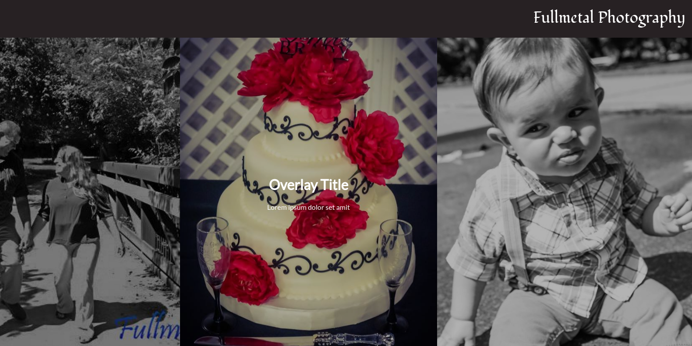

Fullmetal Photography Website (WIP)
Description
Overview:
The Fullmetal Photography website is currently under construction for a client with a small photography startup in need of an online presence. The entire layout and functionality are being created from scratch, and I am working with a designer to create a unique look for the site (unimplemented at present).
The site is being built as a WordPress theme, allowing the client to have complete control over the content that is presented on the site. This includes custom fields for editing content on the front page and page templates, a nav menu walker for nav menu creation, and several action hooks to modify loaded scripts, css, and inline styles.
Besides WordPress, the site is being developed using Sass CSS preprocessing language, Gulp task runners for several tasks (JS bundling, Sass compilation, image minification, etc.), and git to control version histories.
Working on this project has given me a much more insight into how powerful WordPress can be as a content management system. I also enjoy using development tools such as Sass and Gulp in this environment, as it makes creating the theme templates much faster than the typical WordPress theme development process. In terms of soft skills, working with both a client and designer has allowed me to continue improving my communication skills.
See website (WIP)See the code